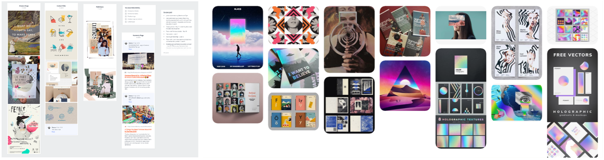
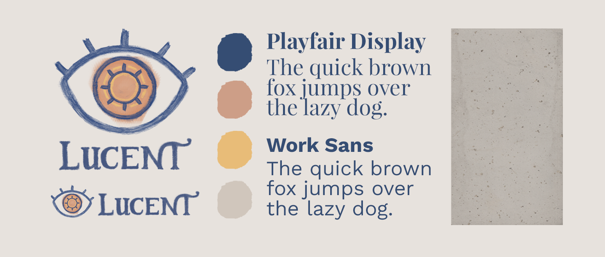
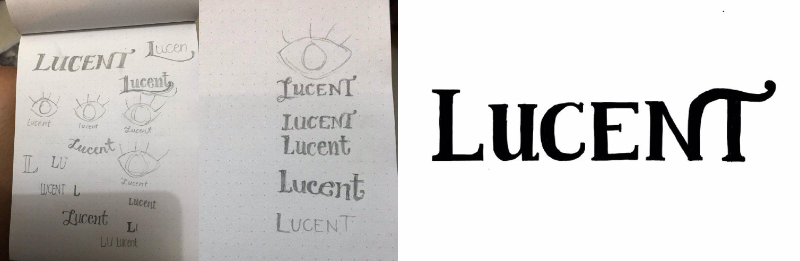
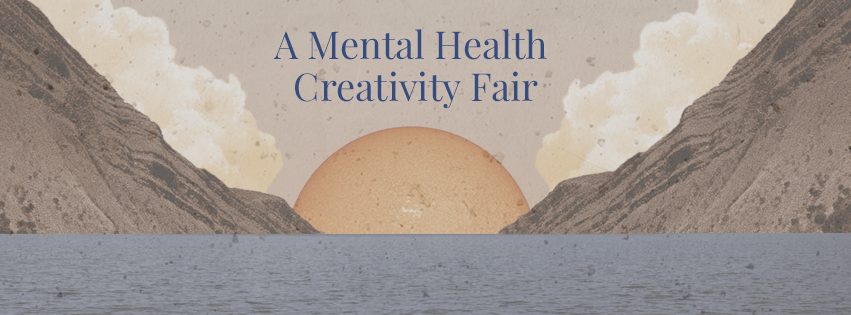
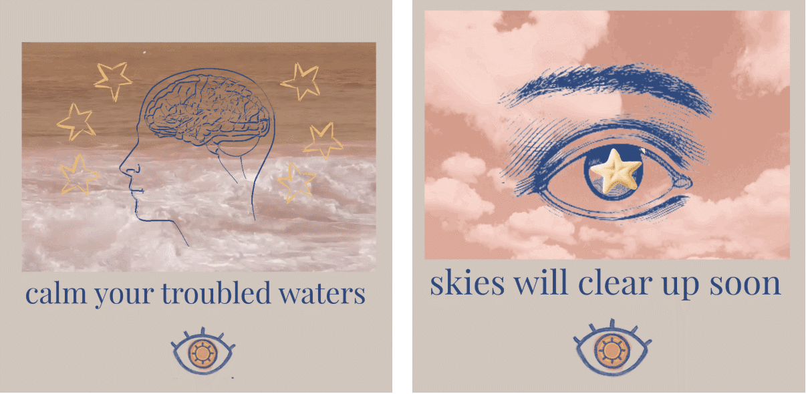
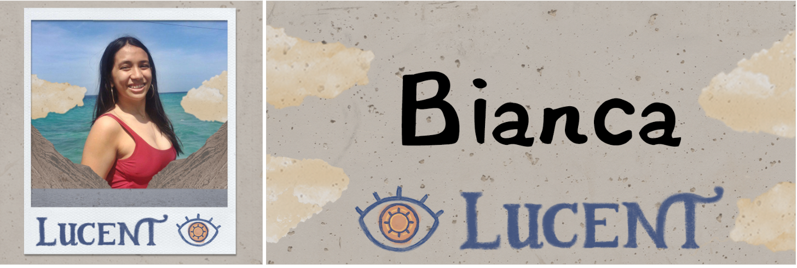
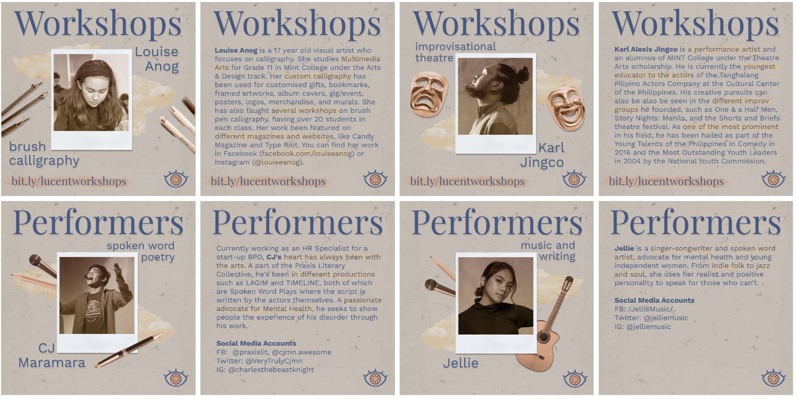

Lucent Fair
Design and direction for a creativity fair advocating for mental health awareness.
Year
2018
Role
Creatives Head
Key Skills
Art Direction, Graphic Design

Lucent (previously named Luna) is an annual creativity fair that aims to promote mental health awareness through art, workshops, talks, and performances. It was collectively organized by local mental health organizations (i.e. Youth for Mental Health Coalition, Silakbo, Tayo;Tayo,and Tala).
As the Creatives Head, I was responsible for designing of the event’s identity and collateral + managing a team of ~5 creatives.
Theme
A common thread I noticed in the stories of the mentally ill is that sadness is experienced as “a dark place”. As a response to this, I decided to base the fair’s theme on light. This can convey multiple positive meanings, like hope and warmth. It also represents awareness, which the Philippines needs more of in terms of mental health.
"No matter how dark life gets, the sun will always rise again"
Tagline for Lucent
Lucent moodboard
Identity
I wanted to give the fair a personally handcrafted look, in order to represent the creativity in the fair and make it seem calm and approachable. This was executed through the use of muted colors and collage art.
The fair’s logo is an eye with a sun as its pupil, symbolizing hope and awareness. I decided to have both the icon and logotype hand-drawn to help convey the personal look.
Logotype sketches (left), approved sketch (right) by Gabrielle Larin
Collateral
Facebook cover photo
Teaser GIFs
Facebook DP frame template (left), nametag template (right)
Workshops & Performers Pubmats
Results
Compared to its iteration last year, Lucent Fair was much more successful. Key success metrics include the following:
- 150-200 participants (last year only had ~50)
- 3k+ reach (Facebook)
- ~120k pesos in donations (used by the Philippine Mental Health Association for numerous public schools in Metro Manila)
Credits
- Mira Arguelles: Project Head (thank you for all your direction!)
- Tracey Dela Cruz, Natalia Aguilar, Gabrielle Larin, Kriztin Cruz, Kitkat Barreiro: Lucent Creatives (thank you for all your help!)